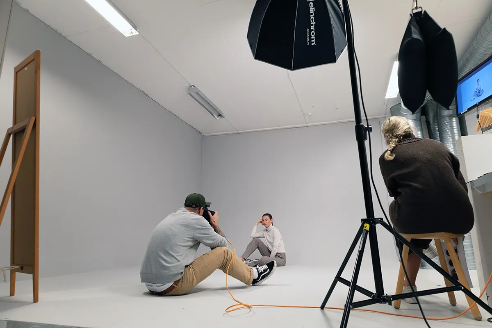
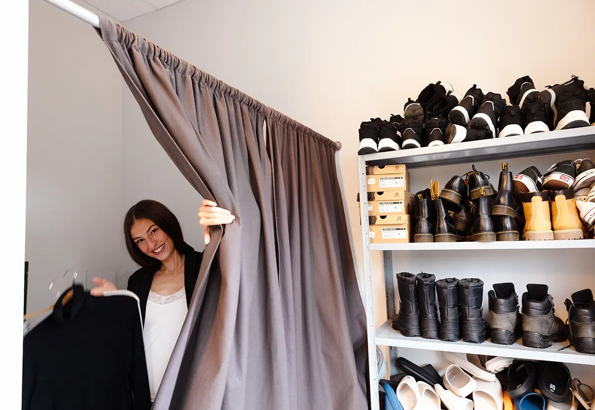
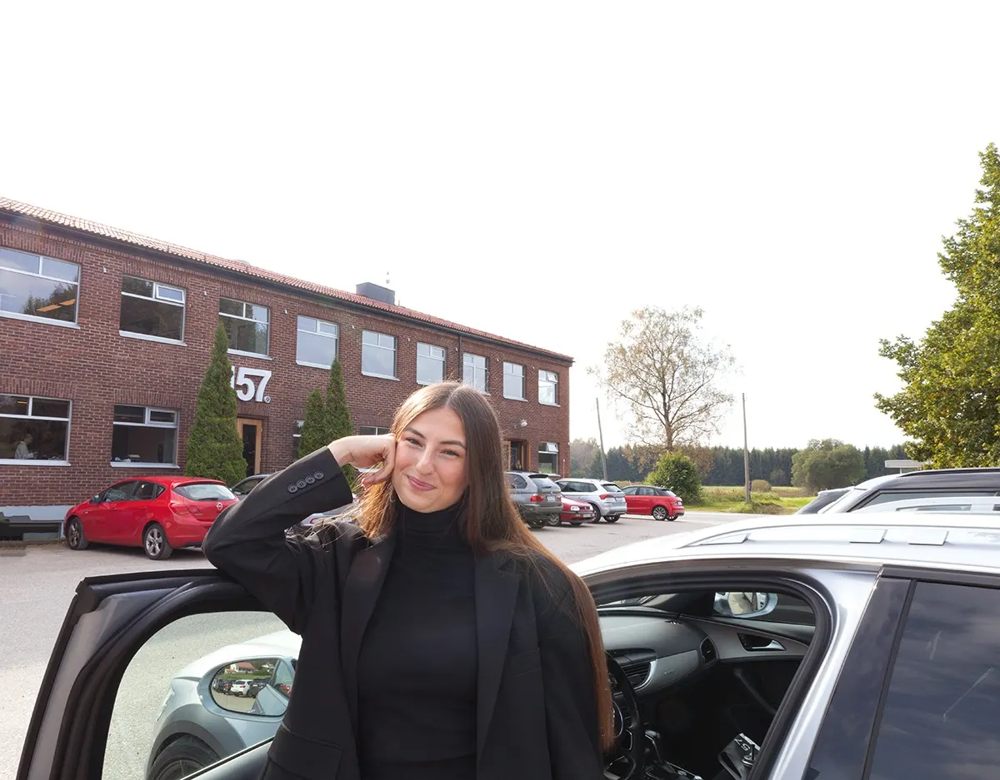

Reportage
Mellan skolbänken och catwalken: Elisabets balansakt hos Lager 157
I en morgon i Gällstad, Sverige, öppnas dörren till Lager 157s företagsbyggnad. Klockan är 08:00, och inuti vaknar kontoret till liv. Men av de anställda som gör sig redo för dagen är Elisabet, en 25-årig byggnadsingenjörsstudent som även arbetar som modell för Lager 157.
För henne är livet en balansakt mellan akademiska böcker och catwalken. Följ med oss bakom kulisserna på en vanlig onsdag i Elisabets liv.

Vi parkerar utanför företaget Lager 157s byggnad i Gällstad. Det är en grå och tidig morgon, men stämningen är redan upplyftande.
– Jag är alltid en minut sen in i studion, skrattar Elisabet, vår guide för dagen.
För att nå studion måste vi traska genom kontorskorridorerna, passera chefer, kundtjänstspecialister och det kreativa teamet som ansvarar för företagets innehåll och webbsidor. Lager 157, känt för sitt avslappnade mode och vardagskläder, men idag får vi en inblick bakom kulisserna och ser mer än bara ytan.
I ett hörn fyllt av skor i alla storlekar, kläder sorterade efter säsong och ett draperi som skymmer omklädningsytan, står Elisabet framför spegeln. Hon låter blicken svepa över sin necässär och plockar noggrant fram det hon behöver. Med en lugn precision börjar hon förbereda sig.
– Det är lättare om jag sminkar mig själv. Jag känner mitt ansikte bäst, så det blir bättre på det sättet.

Studiomanagern och fotografen rör sig metodiskt medan de förbereder studion. Ljudet av dämpade röster blandas med mjuka toner från musiken som fyller rummet och skapar en avslappnad stämning. Kläderna är omsorgsfullt utvalda och hänger prydligt på rad, redo för dagens session.
Elisabet är 25 år gammal och studerar till byggnadsingenjör vid Jönköpings universitet. Hon har jobbat som modell för Lager 157 sedan några år tillbaka. För henne handlar det inte om att bygga en modellkarriär, utan om att ha roligt och ta chanser när de dyker upp.
– Jag har aldrig velat satsa helhjärtat på att bli modell; konkurrensen är helt enkelt för hårt, förklarar Elisabet.
Sminkningen sker på morgonen och följs av en längre fotografering innan en lunchrast. Elisabet kan dock inte lägga hela dagar på detta längre eftersom studierna kräver mycket av hennes tid. Efter dagens arbete i studion ska hon direkt till skolan för att delta i ett seminarium.

Under fotograferingen märks det tydligt att kreatörsteamet och Elisabet har gjort detta länge och känner varandra väl. De engagerar sig i småprat om att köpa hus och skaffa hundar. I en liten stad vet alla var gatan är utan att behöva en karta att förhålla sig till.
– Hår!, är det enda fotografen nämner, och Elisabet tar hand om resten.
Den gemensamma förståelsen är påtaglig. Fraser som ”pall” och ”spegel” kräver ingen ytterligare förklaring.

Men vad skiljer Elisabets historia från den vanliga? Statistiska centralbyrån (SCB) avslöjar att 17 procent av unga i Sverige i åldern 15–34 år aldrig har haft någon kontakt med arbetsmarknaden under sina studier.
För Elisabet handlar det om att hitta balansen mellan arbete och studier. Det är inte alltid lätt att vara student samtidigt som man modellar, men det handlar om att göra det som man älskar och orkar med.
– Det är därför jag har satt andra intressen åt sidan det här året och fokuserar på mina studier först. Sedan modellerar jag, och om jag har tid, tränar jag eller tar långa promenader med min hund.

Efter några intensiva timmar av ombyten, poser och glädje, byter Elisabet till sina vardagskläder. Med ett leende på läpparna och en växande aptit beger hon sig mot skolan, redo för en ny utmaning.
Elisabets berättelse är en påminnelse om att det är möjligt att balansera både skola och passion så länge man är passionerad nog och orkar. Oavsett om du är en hängiven student eller en blomstrande modell, är vägen din att forma. Det handlar om att följa dina drömmar och våga ta chanser när de dyker upp, precis som Elisabet gör varje onsdag.